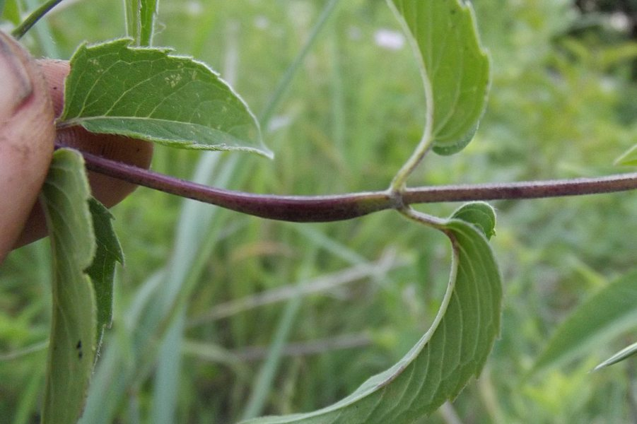
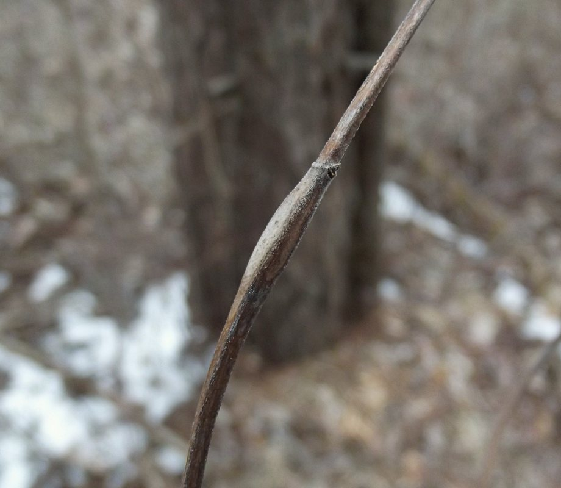
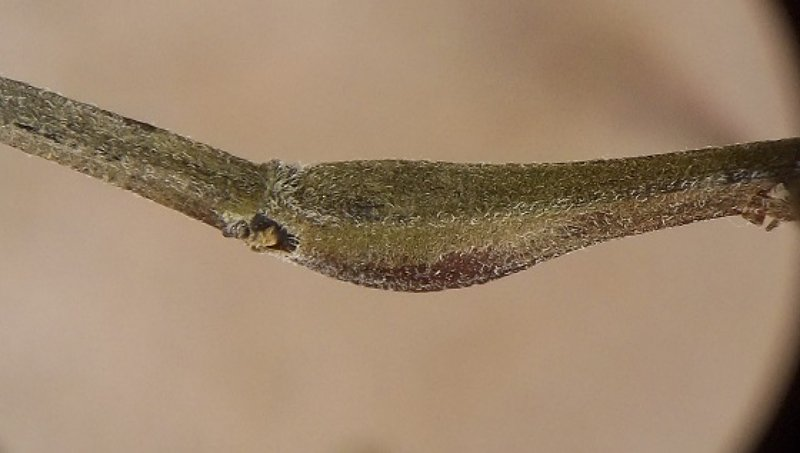
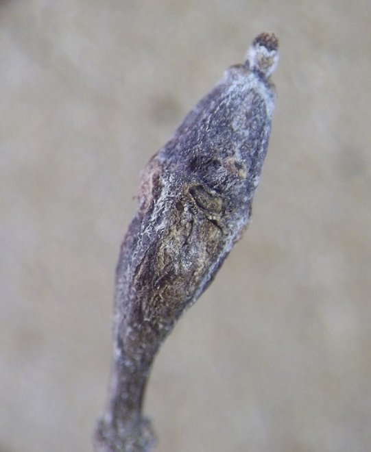
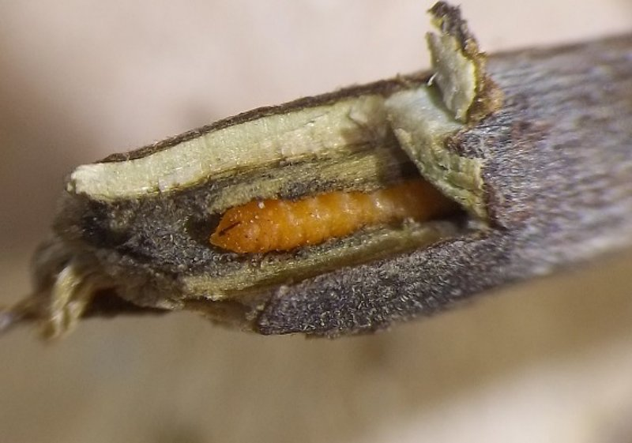
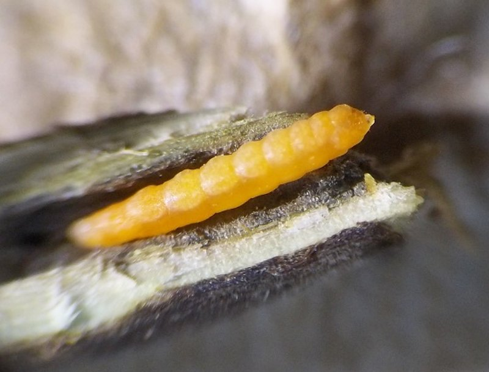
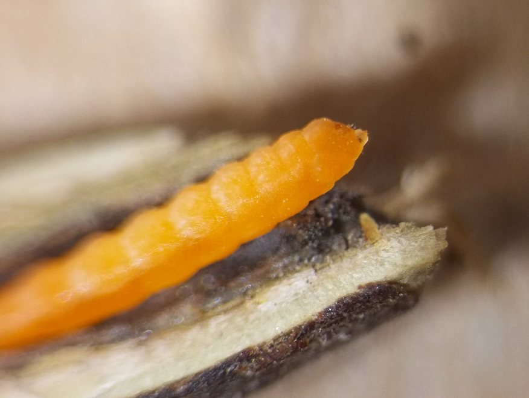
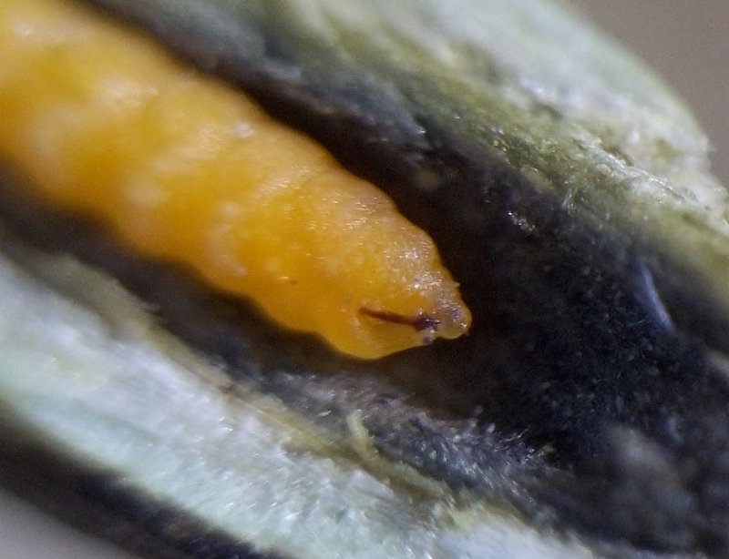

Local feeder (Diptera: Cecidomyiidae) in stems of Monarda
| Record no.: | 0336 |
|---|---|
| Feeding guild: | Local feeder in stem |
| Taxonomy: | Diptera: Cecidomyiidae: Neolasioptera monardi |
| Stages observed: | trace, larva |
| Distribution observed: | IA |
| Hosts in Monarda: | M. fistulosa (bee balm, wild bergamot) |
In December 2016, I located several slender, spindle-shaped stem galls made by this cecidomyiid and photographed the bright orange larva inside one of them. The larva was ensconced within a narrow, cylindrical, blackened chamber in the pith in the center of the gall. I also located and photographed similar galls in July 2017 and March 2024. The species-level identification is based on the species account in Gagné (1989).

 Prev
Prev
{kind=link}
{kind=link}

{kind=link}

{kind=link}

{kind=link}

{kind=link}

{kind=link}

{kind=link}

- Gagné, R.J. 1989. The plant-feeding gall midges of North America. Cornell University Press: Ithaca, New York.[return to in-text citation]
Page created: February 13, 2026. Last update: March 28, 2026